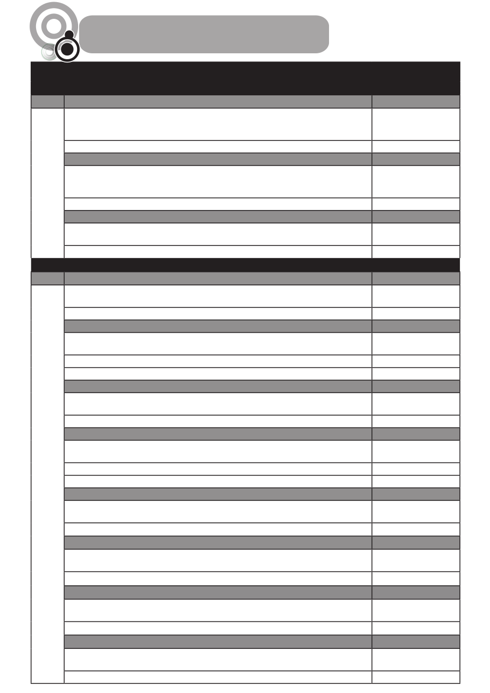

KWARTAAL 1ONDERWERP 4 Wêreld van werkWeke Eenheid 1Tydsbestuursvaardighede: verantwoordbaarheid in die uitvoering van verant-woordelikhedeHoe om jou werk te organiseerGeen aktiwiteiteEenheid 2Tydsbestuursvaardighede: verantwoordbaarheid in die uitvoering van verant-woordelikhedeHoe om jou tyd doeltreffend te benutAkt. 1: Vrye tydEenheid 3Lees en skryf om verskillende redesHou ’n joernaal by; maak opsommings en verbeter lees en skryfvaardighedeAkt. 1: My joernaalONDERWERP 1 Selfontwikkeling in die samelewingEenheid 1Doelwitstelling: persoonlike leefstylkeusesInvloed van verskillende faktore op leefstylkeusesAkt. 1: Yster slyp ysterEenheid 2Gepaste reaksies op invloede op persoonlike leefstylkeusesIngeligte besluitnemingsvaardighedeAkt. 1: Help my besluit!Akt. 2: Bedreiging of geleentheid?Eenheid 3Gepaste reaksies op invloede op persoonlike leefstylkeusesSelfversekerdheid/selfgelding: besluitneming met selfvertroueAkt. 1: Wie is die ster?Eenheid 4Seksuele gedrag en seksuele gesondheidRisikofaktore wat tot ongesonde seksuele gedrag aanleiding geeAkt. 1: Sleg of verslawend?Akt. 2: Die media en tienerseksualiteitEenheid 5Seksuele gedrag en seksuele gesondheidOngewenste resultate van ongesonde seksuele gedragGeen aktiwiteiteEenheid 6Seksuele gedrag en seksuele gesondheidFaktore wat persoonlike gedrag beïnvloedAkt. 1: Wie beïnvloed vir wie?Eenheid 7Seksuele gedrag en seksuele gesondheidStrategieë om ongesonde seksuele gedrag te hanteerGeen aktiwiteiteEenheid 8Seksuele gedrag en seksuele gesondheidBeskermende faktore, waar om hulp en ondersteuning te vindAkt. 1: My seksuele regte
Tipe
My Jaarbeplanning